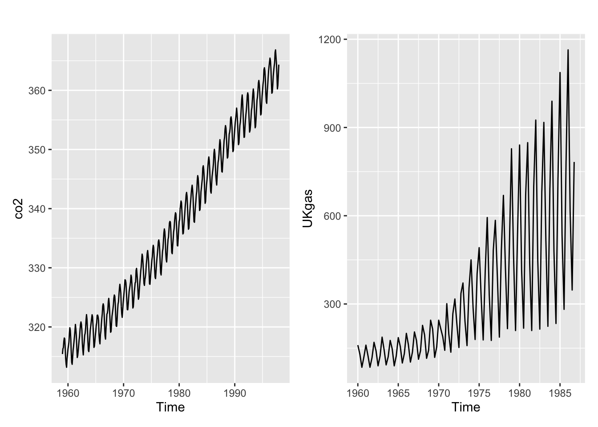
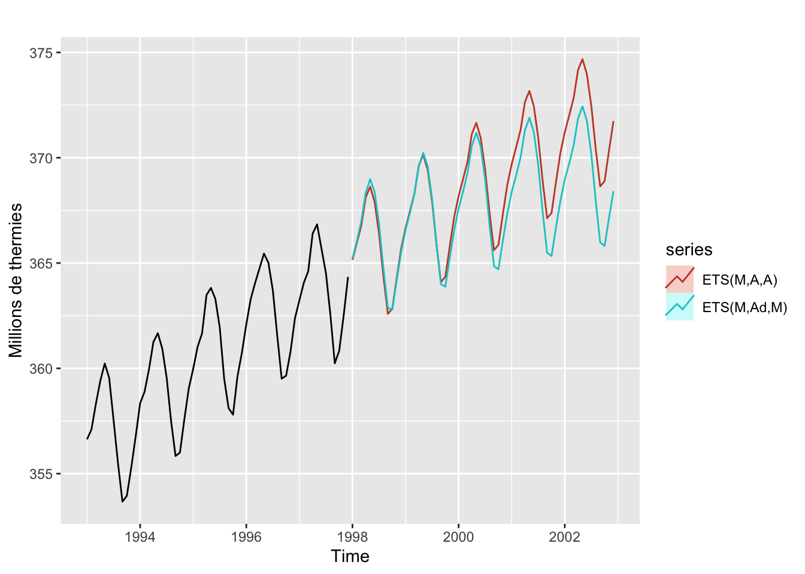
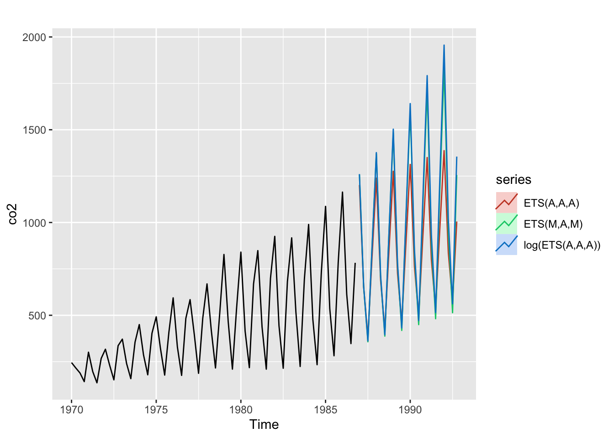
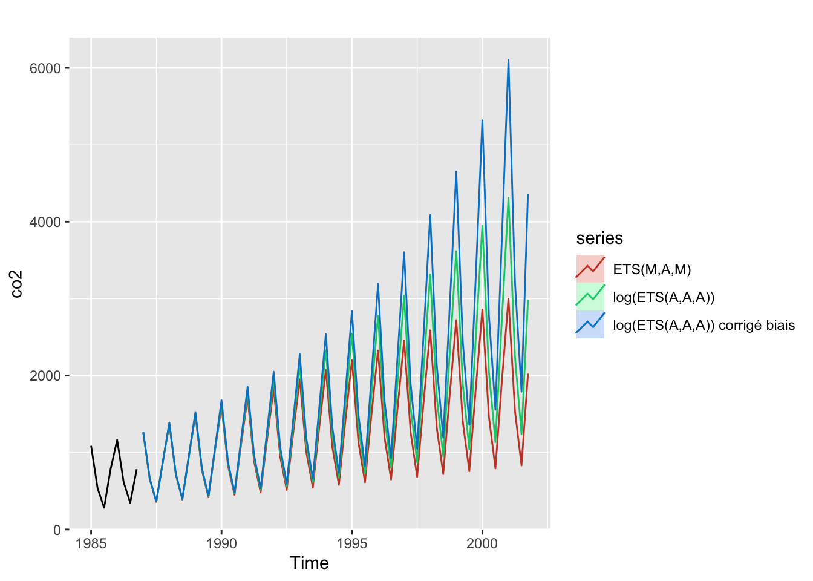
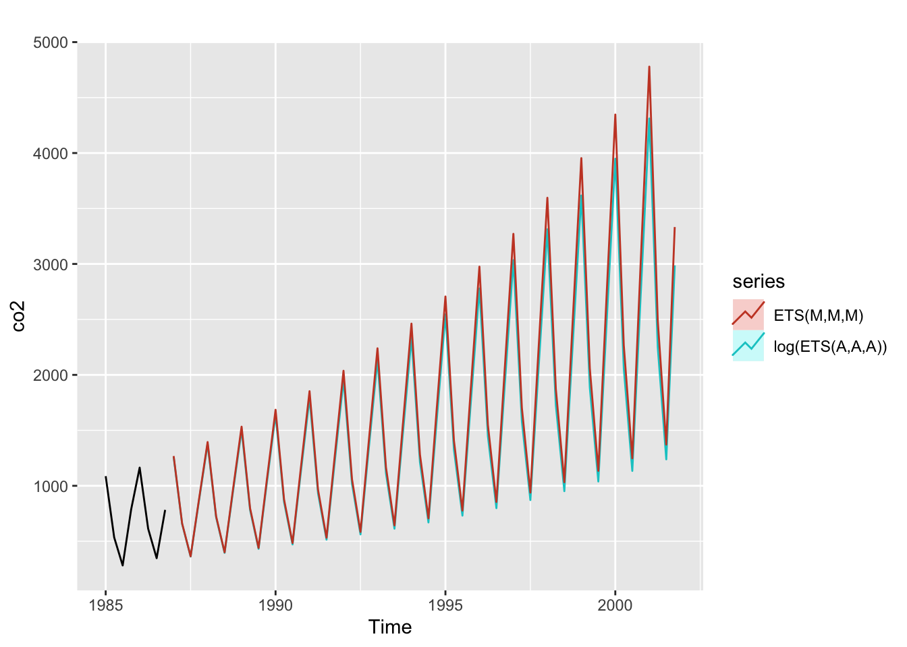
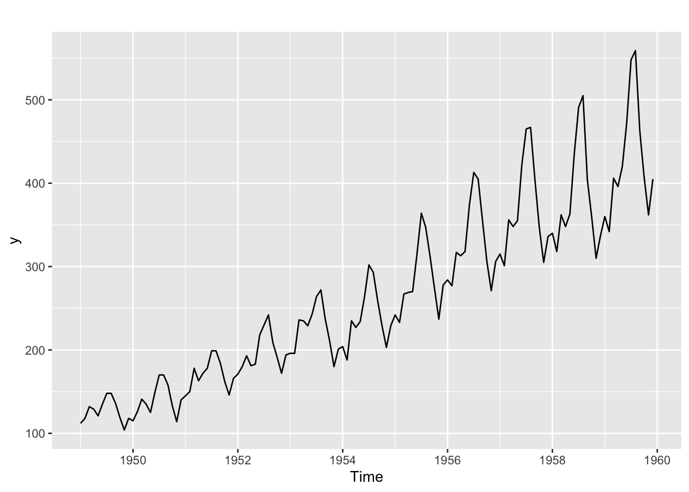
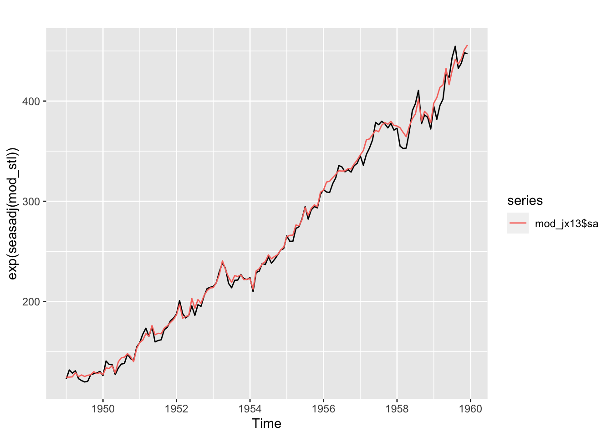
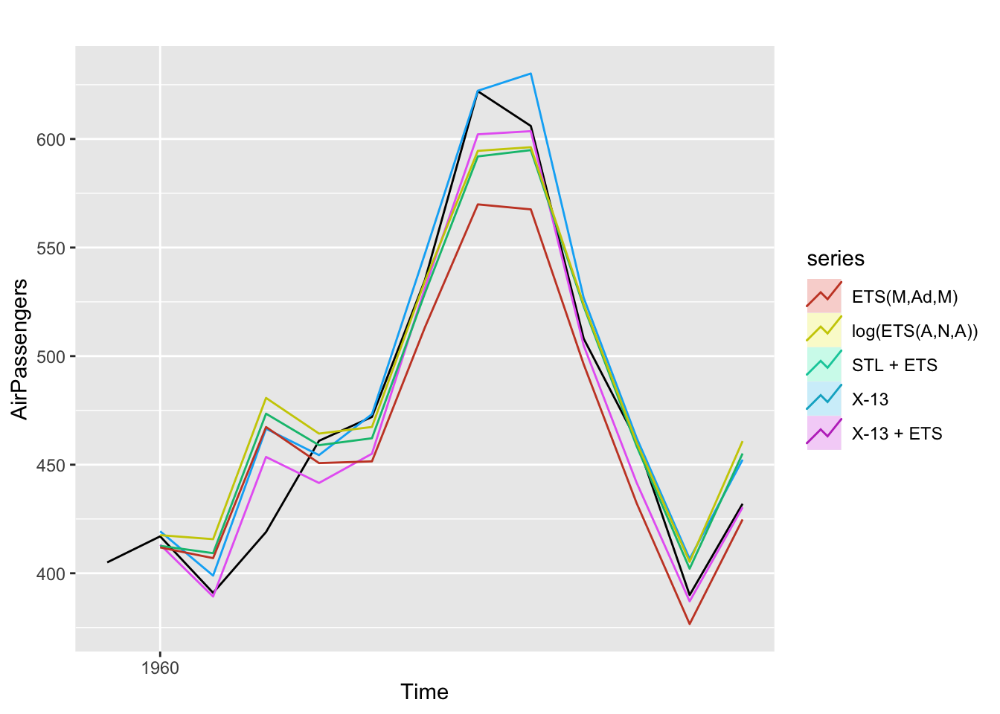

packages_to_install <- c("ggplot2", "forecast", "RJDemetra", "ggdemetra")
packages <- installed.packages()[,"Package"][! packages_to_install %in% installed.packages()[,"Package"]]
if (length(packages) > 0) {
install.packages(packages)
}
library(forecast)
library(ggplot2)
library(patchwork)4 - Lissage exponentiel
Analyse des séries temporelles avec R
L’objectif de ce TP est d’apprendre à appliquer les modèles ETS
Les packages suivants seront utilisés :
Exercice
Etudier les séries co2 et UKgas : quel modèle parait le plus adapté ? Faut-il transformer la série ? Comparer les prévisions en utilisant des schémas additifs et multiplicatifs et en transformant ou non la série.
Solution
autoplot(co2) + autoplot(UKgas)
Les deux séries ont une tendance et une saisonnalité. La saisonnalité parait additive pour co2 et multiplicative pour UKGas. Pas de raison de transformer les séries
ets_co2_add = ets(co2, model = "ZZA")
ets_co2_mult = ets(co2, model = "ZZM")
ets_co2_addETS(M,A,A)
Call:
ets(y = co2, model = "ZZA")
Smoothing parameters:
alpha = 0.5995
beta = 0.0065
gamma = 0.129
Initial states:
l = 315.2927
b = 0.0772
s = -0.8309 -1.8609 -3.0483 -2.782 -1.2615 0.7793
2.1909 2.7066 2.1724 1.2282 0.6624 0.0439
sigma: 9e-04
AIC AICc BIC
1748.989 1750.349 1819.513 ets_co2_multETS(M,Ad,M)
Call:
ets(y = co2, model = "ZZM")
Smoothing parameters:
alpha = 0.6824
beta = 0.0415
gamma = 3e-04
phi = 0.9773
Initial states:
l = 315.3348
b = 0.1077
s = 0.9972 0.9939 0.9904 0.9909 0.9963 1.0024
1.0069 1.0088 1.0074 1.004 1.0018 0.9999
sigma: 8e-04
AIC AICc BIC
1721.105 1722.628 1795.777 autoplot(window(co2, start = 1993), y = "Millions de thermies") +
autolayer(forecast(ets_co2_add, h = 60, PI = FALSE), "ETS(M,A,A)") +
autolayer(forecast(ets_co2_mult, h = 60, PI = FALSE), "ETS(M,Ad,M)")
Les prévisions très proches sur le CT mais s’éloignent sur le long-terme. Cela vient notamment la tendance est amortie dans le modèle multiplicatif.
ets_gas_add = ets(UKgas, model = "ZZA")
ets_gas_mult = ets(UKgas, model = "ZZM")
ets_gas_add_log = ets(UKgas, model = "ZZA", lambda = 0)
ets_gas_add_log_unb = ets(UKgas, model = "ZZA", lambda = 0, biasadj = TRUE)
autoplot(window(UKgas, start = 1970), y = "co2") +
autolayer(forecast(ets_gas_add, h = 24, PI = FALSE), "ETS(A,A,A)") +
autolayer(forecast(ets_gas_mult, h = 24, PI = FALSE), "ETS(M,A,M)") +
autolayer(forecast(ets_gas_add_log, h = 24, PI = FALSE), "log(ETS(A,A,A))") 
Ici la différence entre multiplicatif et additif est plus nette : Dans les deux modèles on prévoit une hausse de la tendance mais les amplitudes croissent de manière exponentielle dans le modèle multiplicatif alors qu’elles restent constantes dans le cas additif (ce qui est logique) Passer au log ne semble pas avoir beaucoup d’impact
Sur le plus long terme les résultats sont en revanche différents Passer au log conduit à des estimations plus importantes (notamment lorsque l’on corrige du bais. Rappels : sans correction du biais cela revient à avoir une estimation de la médiane plutôt que moyen, ce qui n’est pas forcément incohérent). C’est logique car lorsque l’on passe au log cela revient à supposer que la tendance est également multiplicative
autoplot(window(UKgas, start = 1985), y = "co2") +
autolayer(forecast(ets_gas_mult, h = 60, PI = FALSE), "ETS(M,A,M)") +
autolayer(forecast(ets_gas_add_log, h = 60, PI = FALSE), "log(ETS(A,A,A))") +
autolayer(forecast(ets_gas_add_log_unb, h = 60, PI = FALSE), "log(ETS(A,A,A)) corrigé biais")
log(ETS(A,A,A)) et ETS(M,M,M) donnent des résultats similaires
autoplot(window(UKgas, start = 1985), y = "co2") +
autolayer(forecast(ets_gas_add_log, h = 60, PI = FALSE), "log(ETS(A,A,A))") +
autolayer(forecast(ets(UKgas, model = "MMM"), h = 60, PI = FALSE), "ETS(M,M,M)")
Exercice
L’objectif de cette exercice est d’étudier la série AirPassengers en utilisant plusieurs méthodes :
Enlever les 12 derniers mois de
AirPassengers.Désaisonnaliser la série en utilisant
stl(., s.window = "periodic")(après transformation de la série) etRJDemetra::x13(., spec = RJDemetra::x13_spec(easter.enabled = FALSE, transform.function = "Log")).Appliquer un modèle ETS sur la série désaisonnalisée.
Prévoir la série désaisonnalisée sur 12 mois puis la série brute réintroduisant :
- la saisonnalité sur la dernière année pour la méthode STL (peut se faire en une étape avec la fonction
forecast::stlf()) ;
- les prévisions de la saisonnalité pour la méthode X-13-ARIMA.
Comparer les prévisions des précédentes méthodes avec un ETS directement calculé sur la série désaisonnalisée (avec ou sans transformation de Box-Cox).
Qu’en est-il de la prévision en temps-réel (en utilisant la fonction
tsCV()) ?
Indice
Pour récupérer la composante saisonnière avec X-13 on pourra utiliser le code suivant
library(RJDemetra)
y <- window(ipi_c_eu[,"FR"], start = 2010)
x13_spec <- x13_spec(easter.enabled = FALSE, transform.function = "Log")
mod_x13 <- x13(y, x13_spec)
ggdemetra::seasonal(mod_x13) Jan Feb Mar Apr May Jun Jul
2010 0.9479753 0.9734184 1.1314166 1.0194466 0.9149364 1.1040334 1.0253971
2011 0.9486036 0.9738929 1.1146702 0.9990949 0.9435734 1.0943653 0.9971672
2012 0.9744944 0.9952811 1.0894809 0.9994940 0.9609052 1.0773442 1.0308806
2013 0.9881143 0.9734166 1.0586928 1.0414531 0.9661151 1.0343284 1.0633799
2014 0.9887445 0.9708317 1.0618924 1.0340629 0.9456969 1.0716857 1.0449424
2015 0.9611904 0.9664643 1.0947446 1.0268935 0.9248260 1.1112972 1.0452371
2016 0.9336952 0.9939049 1.1148269 1.0091687 0.9628352 1.0902251 0.9872514
2017 0.9643035 0.9598990 1.1181909 0.9641950 1.0015167 1.0999538 0.9910340
2018 0.9940038 0.9589041 1.0890126 0.9941445 0.9936340 1.0782580 1.0244067
2019 0.9762525 0.9595422 1.0576157 1.0265143 1.0011358 1.0398603 1.0629867
2020 0.9768492 0.9563783 1.0931460 1.0048644 0.9500369 1.1224476 1.0549500
Aug Sep Oct Nov Dec
2010 0.7473449 1.0778667 1.0402228 1.0450781 0.9908451
2011 0.7725295 1.0855555 1.0436457 1.0336021 0.9645023
2012 0.7668908 1.0190248 1.1114204 1.0328655 0.9392665
2013 0.7511679 1.0558980 1.0943162 1.0101039 0.9672872
2014 0.7347217 1.0923548 1.0977123 0.9715733 0.9995163
2015 0.7410440 1.0774877 1.0685360 1.0097237 0.9855990
2016 0.7929649 1.0745879 1.0421123 1.0381299 0.9631477
2017 0.7846862 1.0498446 1.0744776 1.0308174 0.9322877
2018 0.7891563 1.0084274 1.1117543 1.0382887 0.9294119
2019 0.7697163 1.0458578 1.0967583 1.0142887 0.9512178
2020 0.7506828 1.0740572 1.0727587 1.0092022 0.9628865ggdemetra::seasonaladj(mod_x13) Jan Feb Mar Apr May Jun Jul
2010 95.25565 95.64233 96.78133 98.48481 104.37885 101.26505 98.30338
2011 104.36394 104.32359 103.43866 101.69204 116.68408 99.14422 101.28692
2012 101.89900 100.37365 101.24088 99.85052 100.00987 100.71062 100.69062
2013 97.45836 98.31350 98.13990 99.28435 99.57405 101.99855 98.92984
2014 97.90194 100.01734 98.78591 99.51039 97.70572 97.78987 98.85712
2015 98.41963 99.43461 99.01853 99.71823 98.39689 100.60315 96.72447
2016 101.85337 100.21080 97.14512 102.36148 102.40590 101.17176 97.03709
2017 102.56108 101.15647 102.39754 101.63919 102.54447 101.27698 100.40019
2018 102.41410 102.82571 103.67189 103.60666 99.33235 104.61318 104.06023
2019 106.32495 106.30070 105.52037 104.43109 105.08065 101.93677 103.29386
2020 103.39364 104.66569 83.97780 66.37711 77.57594 87.48738 92.32665
Aug Sep Oct Nov Dec
2010 99.68623 101.12568 100.93991 98.27017 102.84151
2011 101.35535 101.33060 101.95031 102.84422 103.88777
2012 102.75257 100.97889 96.81305 98.65757 97.41645
2013 97.71450 97.83142 99.87972 98.00971 97.79929
2014 97.31577 98.13661 98.11314 98.29418 98.44762
2015 102.69296 101.25406 100.79212 100.81966 101.35969
2016 100.50886 100.41059 99.22155 100.85443 103.51476
2017 103.73573 103.06287 105.35353 107.68154 106.72671
2018 104.66875 103.82503 104.33960 105.55831 105.01264
2019 102.37538 104.22067 106.22213 102.53491 102.81557
2020 95.51304 97.48084 99.46319 100.67358 100.32336ggdemetra::seasonal(mod_x13, forecast = TRUE) Jan Feb Mar Apr May Jun Jul
2021 0.9240691 0.9625840 1.1283879 1.0116767 0.9542506 1.1122949 1.0301236
Aug Sep Oct Nov Dec
2021 0.7736290 1.0661433 1.0421204 1.0454394 0.9628614Si l’on veut une version plus rapide du code on peut également utiliser cette option :
mod_jx13 <- jx13(y, x13_spec)
saisonnalite <- get_indicators(mod_jx13, c("s", "sa", "s_f", "y_f"))
saisonnalite[["s"]] Jan Feb Mar Apr May Jun Jul
2010 0.9479753 0.9734184 1.1314166 1.0194466 0.9149364 1.1040334 1.0253971
2011 0.9486036 0.9738929 1.1146702 0.9990949 0.9435734 1.0943653 0.9971672
2012 0.9744944 0.9952811 1.0894809 0.9994940 0.9609052 1.0773442 1.0308806
2013 0.9881143 0.9734166 1.0586928 1.0414531 0.9661151 1.0343284 1.0633799
2014 0.9887445 0.9708317 1.0618924 1.0340629 0.9456969 1.0716857 1.0449424
2015 0.9611904 0.9664643 1.0947446 1.0268935 0.9248260 1.1112972 1.0452371
2016 0.9336952 0.9939049 1.1148269 1.0091687 0.9628352 1.0902251 0.9872514
2017 0.9643035 0.9598990 1.1181909 0.9641950 1.0015167 1.0999538 0.9910340
2018 0.9940038 0.9589041 1.0890126 0.9941445 0.9936340 1.0782580 1.0244067
2019 0.9762525 0.9595422 1.0576157 1.0265143 1.0011358 1.0398603 1.0629867
2020 0.9768492 0.9563783 1.0931460 1.0048644 0.9500369 1.1224476 1.0549500
Aug Sep Oct Nov Dec
2010 0.7473449 1.0778667 1.0402228 1.0450781 0.9908451
2011 0.7725295 1.0855555 1.0436457 1.0336021 0.9645023
2012 0.7668908 1.0190248 1.1114204 1.0328655 0.9392665
2013 0.7511679 1.0558980 1.0943162 1.0101039 0.9672872
2014 0.7347217 1.0923548 1.0977123 0.9715733 0.9995163
2015 0.7410440 1.0774877 1.0685360 1.0097237 0.9855990
2016 0.7929649 1.0745879 1.0421123 1.0381299 0.9631477
2017 0.7846862 1.0498446 1.0744776 1.0308174 0.9322877
2018 0.7891563 1.0084274 1.1117543 1.0382887 0.9294119
2019 0.7697163 1.0458578 1.0967583 1.0142887 0.9512178
2020 0.7506828 1.0740572 1.0727587 1.0092022 0.9628865saisonnalite[["sa"]] Jan Feb Mar Apr May Jun Jul
2010 95.25565 95.64233 96.78133 98.48481 104.37885 101.26505 98.30338
2011 104.36394 104.32359 103.43866 101.69204 116.68408 99.14422 101.28692
2012 101.89900 100.37365 101.24088 99.85052 100.00987 100.71062 100.69062
2013 97.45836 98.31350 98.13990 99.28435 99.57405 101.99855 98.92984
2014 97.90194 100.01734 98.78591 99.51039 97.70572 97.78987 98.85712
2015 98.41963 99.43461 99.01853 99.71823 98.39689 100.60315 96.72447
2016 101.85337 100.21080 97.14512 102.36148 102.40590 101.17176 97.03709
2017 102.56108 101.15647 102.39754 101.63919 102.54447 101.27698 100.40019
2018 102.41410 102.82571 103.67189 103.60666 99.33235 104.61318 104.06023
2019 106.32495 106.30070 105.52037 104.43109 105.08065 101.93677 103.29386
2020 103.39364 104.66569 83.97780 66.37711 77.57594 87.48738 92.32665
Aug Sep Oct Nov Dec
2010 99.68623 101.12568 100.93991 98.27017 102.84151
2011 101.35535 101.33060 101.95031 102.84422 103.88777
2012 102.75257 100.97889 96.81305 98.65757 97.41645
2013 97.71450 97.83142 99.87972 98.00971 97.79929
2014 97.31577 98.13661 98.11314 98.29418 98.44762
2015 102.69296 101.25406 100.79212 100.81966 101.35969
2016 100.50886 100.41059 99.22155 100.85443 103.51476
2017 103.73573 103.06287 105.35353 107.68154 106.72671
2018 104.66875 103.82503 104.33960 105.55831 105.01264
2019 102.37538 104.22067 106.22213 102.53491 102.81557
2020 95.51304 97.48084 99.46319 100.67358 100.32336saisonnalite[["s_f"]] Jan Feb Mar Apr May Jun Jul
2021 0.9240691 0.9625840 1.1283879 1.0116767 0.9542506 1.1122949 1.0301236
Aug Sep Oct Nov Dec
2021 0.7736290 1.0661433 1.0421204 1.0454394 0.9628614# On a d'ailleurs directement une prévision de la série brute qui est faite par modèle ARIMA
saisonnalite[["y_f"]] Jan Feb Mar Apr May Jun Jul
2021 93.80530 98.83526 116.70635 105.64151 99.21541 117.25615 107.92506
Aug Sep Oct Nov Dec
2021 81.39014 112.06948 110.18417 110.21518 101.77148Pour la fonction tsCV() on pourra utiliser la fonction suivante pour X-13
fx13_stl <- function(x, h){
mod_jx13 <- jx13(x, x13_spec)
mod_jx13 <- get_indicators(mod_jx13, c("sa", "s_f"))
ets_x13 <- ets(mod_jx13$sa, model = "AAN") # modèle fixé pour gagner du temps
ets_x13_f <- forecast(ets_x13, h = h)
ets_x13_f$mean <- ets_x13_f$mean * mod_jx13$s_f[1:h] # on ajoute 1:h pour éviter quelques bugs
ets_x13_f$model <- "X-13 + ETS"
# Pas la peine d'actualiser autres paramètres
ets_x13_f
}
Solution
library(RJDemetra)
y <- window(AirPassengers, end = end(AirPassengers) - c(1, 0))
autoplot(y)
# Saisonnalité présente qui dépend de la tendance : passage au log nécessaire pour STL
mod_stl = stl(log(y), s.window = "periodic")
x13_spec <- x13_spec(easter.enabled = FALSE)
mod_jx13 <- jx13(y, x13_spec)
mod_jx13 <- get_indicators(mod_jx13, c("s", "sa", "s_f", "y_f"))
autoplot(exp(seasadj(mod_stl))) +
autolayer(mod_jx13$sa)
ets_x13 = ets(mod_jx13$sa)
ets_stl = ets(seasadj(mod_stl))
ets_x13_f = forecast(ets_x13, h = 12)
ets_stl_f = forecast(ets_stl, h = 12)
x13_f = ets_x13_f$mean * mod_jx13$s_f # Il faut multiplier car schéma multiplicatif
ets_f = ets_stl_f$mean + lag(seasonal(mod_stl), -12)
ets_f = exp(ets_f)On aurait directement pu obtenir les résultats avec fonction stlf
ets_f - stlf(y, lambda = 0, h = 12, s.window = "periodic")$mean Jan Feb Mar Apr May Jun Jul Aug Sep Oct Nov Dec
1960 0 0 0 0 0 0 0 0 0 0 0 0est_direct = ets(y)
est_direct_bc = ets(y, lambda = 0)
autoplot(window(AirPassengers, start = end(AirPassengers) - c(1, 0)),
y = "AirPassengers") +
autolayer(x13_f, series = "X-13 + ETS") +
autolayer(mod_jx13$y_f, series = "X-13")+
autolayer(ets_f, series = "STL + ETS")+
autolayer(forecast(est_direct, PI=FALSE, h =12), series = "ETS(M,Ad,M)")+
autolayer(forecast(est_direct_bc, PI=FALSE, h =12), series = "log(ETS(A,N,A))")
Les séries qui semblent avoir les meilleurs prévisions sont X-13 (modèle ARIMA, voir TP 5) et X-13 + ETS. Le moins bon semble l’ETS directement calculé.
fx13_stl <- function(x, h){
mod_jx13 <- jx13(x, x13_spec)
mod_jx13 <- get_indicators(mod_jx13, c("sa", "s_f"))
ets_x13 <- ets(mod_jx13$sa, model = "AAN") # modèle fixé pour gagner du temps
ets_x13_f <- forecast(ets_x13, h = h)
ets_x13_f$mean <- ets_x13_f$mean * mod_jx13$s_f[1:h] # on ajoute 1:h pour éviter quelques bugs
ets_x13_f$model <- "X-13 + ETS"
# Pas la peine d'actualiser autres paramètres
# ets_x13_f$upper = ets_x13_f$upper * mod_jx13$s_f
# ets_x13_f$lower = ets_x13_f$lower * mod_jx13$s_f
ets_x13_f
}
fx13 <- function(x, h){
mod_jx13 <- jx13(x, x13_spec)
x13_f <- get_indicators(mod_jx13, c("y_f"))$y_f
## Ici il y a des calculs en trop car la prévision est uniquement faite avec le pré-ajustement, on pourrait encore optimiser en ne faisant que le pré-ajustement
# mod_jx13 <- jregarima(y, x13_spec$regarima)
# x13_f <- get_indicators(mod_jx13, c("model.y_f"))[[1]]
x13_f <- window(x13_f, end = time(x13_f)[h])
return(structure(list(method = "X-13ARIMA",
model = mod_jx13,
mean = x13_f,
level = NULL,
lower = NULL, upper = NULL, x = NULL, series = NULL,
fitted = NULL, residuals =NULL), class = "forecast"))
}
fstl_ets <- function(x, h){
stlf(x, lambda = 0, h = 12, s.window = "periodic", etsmodel = "AAN")
}
fets <- function(x, h){
forecast(ets(x, model = "MAM", damped = TRUE), h = h)
}
fets_bc <- function(x, h){
forecast(ets(x, lambda = 0, model = "AAA"), h = h)
}
# On enlève les 3 premières années pour X-13
e_x13_ets <- tsCV(AirPassengers, fx13_stl, h=1, initial = 3*12)
e_x13 <- tsCV(AirPassengers, fx13, h=1, initial = 3*12)
e_stl_est <- tsCV(AirPassengers, fstl_ets, h=1, initial = 3*12)
e_ets <- tsCV(AirPassengers, fets, h=1, initial = 3*12)
e_ets_bc <- tsCV(AirPassengers, fets_bc, h=1, initial = 3*12)
erreur = ts.union(e_x13_ets, e_x13, e_stl_est,
e_ets, e_ets_bc)
colnames(erreur) <- c("X-13+ETS", "X-13", "STL+ETS", "ETS", "log(ETS)")Le modèle ARIMA (issu de X-13) semble de meilleure qualité :
colMeans(erreur^2, na.rm = TRUE)X-13+ETS X-13 STL+ETS ETS log(ETS)
146.4192 140.2659 202.0902 206.2573 210.5955